방송통신기능사 (2002-01-27 기출문제)
1과목: 임의 구분
1. 그림과 같은 회로에서 R1 = 20[Ω], R2 = 25[Ω], R3 = 100[Ω], V = 100[V]의 전압을 가할때 V2의 전압은 얼마인가?
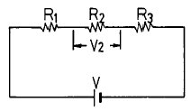
- 13.8[V]
- 17.2[V]
- 69[V]
- 100[V]
(정답률: 알수없음)

2. 기전력 2[V], 용량 10[AH]인 축전지 6개를 직렬로 연결하여 사용할 때 기전력은 12[V]가 된다. 이때 용량[AH]은?
- 10/6
- 10
- 60
- 120
(정답률: 알수없음)
3. 60[㎐], 10[A] 사인파 교류의 순시값 표시는?
- i = 10 sin 120πt
- i = 7.07 sin 377πt
- i = 14.14 sin 120πt
- i = 14.14 sin 377πt
(정답률: 알수없음)
4. R와 L의 병렬회로 합성 임피던스는?
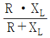
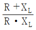
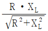
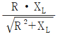
(정답률: 알수없음)
5. R - L - C 직렬회로에서 단자전압이 전류와 동상이 되기 위한 조건은?
- ωL2C2 = 1
- ω2LC = 1
- ωLC = 1
- ω = LC
(정답률: 알수없음)
6. 앙페에르 주회적분의 법칙에서 +1[Wb]의 자극을 전류가 흐르는 도선과 쇄교하는 경로를 따라 일주시킬 때의 일 [J]은? (단, I : 흐른전류, r : 반지름)
- I
- 2I
- 2Ir
- 2r
(정답률: 알수없음)
7. 수정 발진기는 어떤 효과를 이용한 것인가?
- 홀효과
- 광전효과
- 압전효과
- 제에백효과
(정답률: 알수없음)
8. 주파수 변조방식이 VHF 대에서 사용되는 이유는?
- 지향성이 예민하므로
- 주파수대역이 넓게 취해지므로
- 변조가 간단하므로
- FM방식이외는 없으므로
(정답률: 알수없음)
9. 다음과 같은 회로를 무엇이라고 하는가?
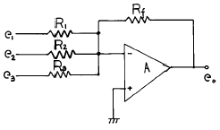
- 감산기
- 가산기
- 부호변환기
- 가감산기
(정답률: 알수없음)
10. 다음과 같은 연산회로를 무엇이라고 부르는가?
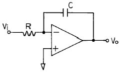
- 덧셈회로
- 뺄셈회로
- 미분회로
- 적분회로
(정답률: 알수없음)
11. 발진회로에서 주파수 체배기의 역할은?
- 주파수를 정수배로 낮춤
- 주파수를 높임
- 신호의 왜곡을 제거
- 신호의 잡음을 제거
(정답률: 알수없음)
12. 15[㎑]의 정현파로 100[㎒]의 반송파를 주파수 변조했을 경우 최대 주파수 편이가 ± 65[㎑]이면 이 때 소요대역폭은 몇[㎑]인가?
- 160
- 650
- 800
- 80
(정답률: 알수없음)
13. 다음 회로에서 다이오드에 흐르는 전류 ID는? (단, 다이오드의 순방향전압은 0.6V이다)
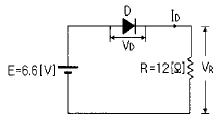
- 0.2[A]
- 0.3[A]
- 0.4[A]
- 0.5[A]
(정답률: 알수없음)
14. 유도 기전력은 자신의 발생 원인이 되는 자속의 변화를 방해하려는 방향으로 발생하는 현상과 관계 깊은 법칙은?
- 렌츠의 법칙
- 패러데이의 전자유도 법칙
- 플레밍의 오른손 법칙
- 플레밍의 왼손 법칙
(정답률: 알수없음)
15. 부궤환 증폭기의 장점으로 틀린 것은?
- 이득이 증가한다.
- 일그러짐이 감소한다.
- 주파수 특성이 개선된다.
- 동작의 안정도가 개선된다.
(정답률: 알수없음)
16. Computer에서의 세대라는 말은 제작년대가 아닌 변화된 Computer의 주구성 요소가 분류의 기준이 된다. 이러한 Computer의 주구성 요소가 발달한 순서대로 정리된 항을 고르시오.
- Transistor - 진공관 - 집적회로
- 집적회로 - 진공관 - Transistor
- 진공관 - Transistor - 집적회로
- 진공관 - 집적회로 - Transistor
(정답률: 알수없음)
17. 입출력 장치의 작용을 제어는 하지만 직접 데이터를 읽거나 쓰거나 하지 않는 장치는?
- 제어 장치
- 기억 장치
- 입출력 장치
- 단말 장치
(정답률: 알수없음)
18. 다음 불 대수(Boolean Algebra)의 기본공식에서 틀린 것은?
- X ⦁ 1 = X
- X ⦁ X = X
- X + X = X
- X + 1 = X
(정답률: 알수없음)
19. 오퍼레이팅 시스템(OPERATING SYSTEM)의 대표적인 기능이 아닌 것은?
- 기억장치와 입·출력장치 등의 시스템 구성요소의 관리
- 프로그램의 집행을 감독하고 통제하는 일
- 입·출력장치의 통제
- 코볼, FORTRAN 등 원시프로그램의 번역
(정답률: 알수없음)
20. 출력장치로만 사용되는 것은?
- 라인 프린터(Line Printer)
- 테이프(Tape)
- 콘솔(Console)
- 카드(Card)
(정답률: 알수없음)
2과목: 임의 구분
21. 데이터의 표현에서 한 바이트(byte)는 몇 비트(bit)를 뜻하는가?
- 5bits
- 8bits
- 6bits
- 7bits
(정답률: 알수없음)
22. 그림의 4변수의 카르노 도표(Karnaugh Map)에서 배열되어야 할 변수는?
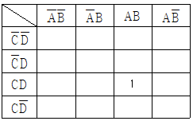
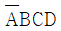
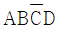
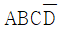
- ABCD
(정답률: 알수없음)
23. FLOW CHART를 작성하는 이유로 적당치 않은 것은?
- ERROR 수정이 용이하다.
- 프로그램의 인계인수가 용이하다.
- MEMORY가 절약된다.
- 처리절차를 일목요연하게 한다.
(정답률: 알수없음)
24. I/O장치와 주기억 장치를 연결하는 중계역할을 담당하는 부분은?
- device
- bus
- channel
- interrupt
(정답률: 알수없음)
25. 컴퓨터에 의한 데이터 처리 방식과 가장 거리가 먼 것은?
- 온라인 처리
- 리얼타임 처리
- 팩시밀리 처리
- 배치 처리
(정답률: 알수없음)
26. CATV 시스템의 헤드엔드의 기능이라고 볼 수 없는 것은?
- AM 방송수신
- 채널변환기능
- 변복조기능
- 신호분리.혼합기능
(정답률: 알수없음)
27. 방송 수신신호의 파장이 150[m]일 때 주파수[㎒]는?
- 1
- 2
- 100
- 200
(정답률: 알수없음)
28. 광통신 방식에 사용되는 발광소자는?
- PD(Photo Diode)
- APD(Avalanche Photo Diode)
- LD(Laser Diode)
- PIN PD(PIN Photo Diode)
(정답률: 알수없음)
29. FM 방송에 대한 설명으로 틀리는 것은?
- VHF대역을 사용한다.
- 채널간격은 200[KHz] 이다.
- 변조방식으로는 주파수변조를 사용한다.
- AM 방식보다 음질이 저하된다.
(정답률: 알수없음)
30. DBS 방송에 관한 설명으로 적합하지 않은 것은?
- 위성에 의한 직접방송을 의미한다.
- 정지궤도위성을 이용하여야만 한다.
- 수신용 안테나는 45㎝ 정도의 소형 안테나를 이용할 수 있다.
- 차량이나 가정에서 직접 수신할 수 있다.
(정답률: 알수없음)
31. 현재 사용되고 있는 광케이블 TV 전송방식은?
- 아날로그 광전송방식
- 디지탈 광전송방식
- 파장분할 광전송방식
- 주파수분할 광전송방식
(정답률: 알수없음)
32. CATV 댁내설비에서 8분배기의 이론적인 삽입손실은 몇[dB] 정도인가?
- -6
- -9
- -12
- -18
(정답률: 알수없음)
33. CATV 전송망 구성에서 수지분기형(Tree & Branch)에 해당되지 않는 사항은?
- 용량이 대용량이다.
- 유지보수가 쉽다.
- 밀집지역에 수용한다.
- 확장성이 크다.
(정답률: 알수없음)
34. CATV 전송 선로에 요구되는 조건이 아닌 것은?
- 저손실성, 광대역성, 반사특성, 차폐특성, 전기적특성이 뛰어날 것
- 풍압, 온도차 등의 환경조건에 견딜 수 있을 것
- 기계적으로 충분한 특성을 갖고 안전성이 좋을 것
- 경제성을 감안하여 가능한한 동축케이블을 쓸 것
(정답률: 알수없음)
35. 잡음지수(Noize Figure)의 올바른 정의는?
- 입력측 신호대 잡음비/출력측 신호대 잡음비
- 출력측 신호대 잡음비/입력측 신호대 잡음비
- 입력측 랜덤 잡음 전력/출력측 랜덤 잡음 전력
- 출력측 랜덤 잡음 전력/입력측 랜덤 잡음 전력
(정답률: 알수없음)
36. 분기기의 입력 단자에 방송신호를 가했을 때 그 입력레벨과 출력단자에서 나오는 출력레벨과의 차를 무엇이라고 하는가?
- 분배손실
- 역결합손실
- 결합손실
- 삽입손실
(정답률: 알수없음)
37. 종합유선방송의 가입자 댁내 인입용 케이블과 기기간의 접속에 사용되는 커넥터는?
- F형
- FC형
- FT형
- FS형
(정답률: 알수없음)
38. 헤드 엔드(head end)에서 송출된 프로그램이 전송선로를 통해서 가입자에 전달되면, 가입자가 서비스를 받기 위해 여러 채널의 프로그램을 수신하기 위하여 채널변환을 하여야하는데 이러한 기능을 가진 단말장치를 무엇이라 하는가?
- 커넥터(connecter)
- 제너레이터(generator)
- 인버터(inverter)
- 컨버터(converter)
(정답률: 알수없음)
39. 다음 보기 설명에 옳은 안테나는?
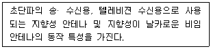
- 야기(Yagi)안테나
- 다이폴(Dipole)안테나
- 휩(Whip)안테나
- V 형 안테나
(정답률: 알수없음)
40. 보안기의 기능 설명으로 옳은 것은?
- 번개, 낙뢰 혹은 전력설비의 누설로 선로계통에 이상전압이 들어오는 것을 방지한다.
- 주택벽면에 설치되어서 TV와 직접 연결시키는 단자용장치이다.
- 잡음 방지 역할을 한다.
- TV 수상기의 수신능력을 초과시에 수신 아답터의 기능을 한다.
(정답률: 알수없음)
3과목: 임의 구분
41. 현재 텔레비젼 방송 방식에서 화질의 문제점에 해당되지 않는 것은?
- 휘도 신호와 색도 신호의 분리에 기인하는 방해 현상
- 비월 주사 방식에 의한 방해 현상
- 고스트 현상
- 반사, 회절 및 흡수 현상
(정답률: 알수없음)
42. 방송통신의 장점으로 가장 잘 표현된 것은?
- 속보성, 광역성, 동시성
- 일괄성, 속보성, 정지성
- 동시성, 광역성, 정지성
- 광역성, 속보성, 정지성
(정답률: 알수없음)
43. 컬러 TV 방식의 종류가 아닌 것은?
- NTSC방식
- PAL방식
- HDTV방식
- SECAM방식
(정답률: 알수없음)
44. 위성통신의 특징이 아닌 것은?
- 통신회선 구성에 신속성과 유연성이 있다.
- 광대역의 통신회선을 구성할수있다.
- 신뢰성이 낮다
- 동보성의 통신이 가능하다
(정답률: 알수없음)
45. TV 방송 송신기에서 최종 안테나 앞단에 위치하는 필터는?
- 고대역필터(High Pass Filter)
- 저대역필터(Low Pass Filter)
- 대역통과필터(Band Pass Filter)
- 대역소거필터(Band Elimination Filter)
(정답률: 알수없음)
46. 방송채널 사용사업의 허가 또는 승인의 유효기간은 얼마를 초과하지 않는 범위내에서 정하는가?
- 1년
- 2년
- 3년
- 5년
(정답률: 알수없음)
47. 방송설비의 경우 상용전원 정전시에 대비하여 갖추어야 할 예비 전원 설비의 용량은 최저 몇 시간 이상 공급할 수 있도록 하여야 하는가?
- 최저 1시간 이상
- 최저 3시간 이상
- 최저 5시간 이상
- 최저 10시간 이상
(정답률: 알수없음)
48. 현행 법령상 정보통신공사업의 종류는?
- 정보통신공사업 단일 업종뿐이다.
- 공중통신공사업과 자가통신공사업
- 특정통신공사업과 부가통신공사업
- 정보통신공사업 1등급과 2등급 및 별종공사업
(정답률: 알수없음)
49. 다음 중 방송국의 구비 조건이 아닌 것은?
- 국민이 방송사업의 계획을 실시할 수 있을 것
- 방송사업의 목적이 법령에 위반되지 아니할 것
- 방송내용이 국가의 이익을 해하지 아니할 것
- 표준 방송국일 때에는 공중선전력이 50[㎾]를 초과하지 아니할 것
(정답률: 알수없음)
50. 다음 중 전송선로부분의 고장이라고 볼 수 있는 것은?
- 컨버터 불량
- TV 연결단자 접촉장애
- VTR 전원 고장
- 단자함 장치 고장
(정답률: 알수없음)
51. 아날로그 TV 방송에서 영상신호의 기저대역 주파수 범위는?
- 3.5[㎒]이내
- 4.2[㎒]이내
- 5.3[㎒]이내
- 7.5[㎒]이내
(정답률: 알수없음)
52. 다음 중 종합유선방송시설의 구내전송설비가 아닌 것은?
- 분기기
- 분배기
- 분리기
- 증폭기
(정답률: 알수없음)
53. 기간통신 사업자가 위탁할 수 있는 전기통신 업무의 종류가 아닌 것은?
- 전기통신 업무중 영업이외의 업무
- 요금의 수납,집금에 관한 업무
- 전기통신 설비의 유지.보수 업무의 일부
- 정보통신부 장관이 필요하다고 인정하는 업무
(정답률: 알수없음)
54. 방송사항의 제작· 편성 및 조정에 필요한 설비와 그 종사자의 총체를 나타내는 용어는?
- 연주소
- 송신소
- 실험국
- 방송국
(정답률: 알수없음)
55. 실험국 및 실용화시험국의 무선국의 개설허가의 유효기간은?
- 1 년
- 2 년
- 3 년
- 6 년
(정답률: 알수없음)
56. 다음 중 정보통신공사업자 이외의 자가 시공할 수 있는 경미한 공사로 볼수 없는 것은?
- 간이 무선국 시설공사
- 자기의 정보통신설비의 유지보수 공사
- 정보통신설비의 단말기 설치공사
- 유선방송 전송설비 공사
(정답률: 알수없음)
57. 전기통신사업의 종류가 아닌 것은?
- 기간통신사업
- 별정통신사업
- 부가통신사업
- 자가통신사업
(정답률: 알수없음)
58. 수신안테나로부터 들어오는 각 채널별 TV 방송 신호의 세기 차이가 몇 dB 가 넘는 경우 레벨조정기를 사용하여야 하는가?
- 1 dB
- 3 dB
- 6 dB
- 10 dB
(정답률: 알수없음)
59. 방송 프로그램을 기획· 편성 또는 제작하고 이를 시청자에게 전기통신설비에 의하여 송신하는 것을 무엇이라고 하는가?
- 방송
- 방송프로그램
- 방송편성
- 방송통신공지
(정답률: 알수없음)
60. 방송법의 목적과 관련이 없는 것은?
- 방송의 자유와 독립을 보장
- 방송의 공적 책임을 높임
- 방송사의 권익보호
- 방송의 발전
(정답률: 알수없음)
먼저 R2와 R3은 병렬 연결되어 있으므로, 이 두 저항의 등가저항을 구해야 합니다. 병렬 연결된 저항의 등가저항은 다음과 같이 구할 수 있습니다.
1/Req = 1/R2 + 1/R3
1/Req = 1/25 + 1/100
1/Req = 0.04
Req = 25[Ω]
따라서 R2와 R3의 등가저항은 25[Ω]입니다.
이제 R1과 R2와 R3의 등가저항을 구해야 합니다. 이 세 저항은 직렬 연결되어 있으므로, 이 세 저항의 등가저항은 다음과 같이 구할 수 있습니다.
Req = R1 + R2 + R3
Req = 20 + 25 + 25
Req = 70[Ω]
따라서 R1과 R2와 R3의 등가저항은 70[Ω]입니다.
이제 전압 분배 법칙을 이용하여 V2의 전압을 구할 수 있습니다. 전압 분배 법칙은 전압이 저항의 비율에 따라 분배된다는 법칙입니다. 따라서 V2의 전압은 다음과 같이 구할 수 있습니다.
V2 = V × (R2 + R3) / (R1 + R2 + R3)
V2 = 100 × (25 + 100) / (20 + 25 + 100)
V2 = 100 × 125 / 145
V2 = 86.2[V]
따라서 V2의 전압은 86.2[V]입니다. 하지만 보기에서는 17.2[V]가 정답으로 주어져 있습니다. 이는 문제에서 소수점 첫째자리까지만 답을 구하도록 요구하고 있기 때문입니다. 따라서 V2의 전압을 소수점 첫째자리까지 반올림하여 계산하면 다음과 같습니다.
V2 = 86.2[V] ≈ 86[V] (반올림)
V2 = 100 × 125 / 145 ≈ 17.2[V] (반올림)
따라서 정답은 "17.2[V]"입니다.